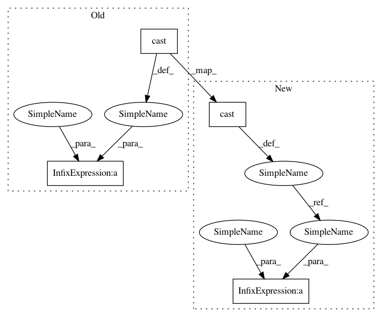

d57bfbec8e170a6c8517d60b585393b0f3b3c732,gpflow/models/svgp.py,SVGP,log_likelihood,#SVGP#,137
Before Change
kl = self.prior_kl()
f_mean, f_var = self.predict_f(X)
var_exp = self.likelihood.variational_expectations(f_mean, f_var, Y)
scale = tf.cast(self.num_data, kl.dtype) / tf.cast(tf.shape(X)[0], kl.dtype)
return tf.reduce_sum(var_exp) * scale - kl
def predict_f(self, Xnew, full_cov=False, full_output_cov=False) -> tf.Tensor:
q_mu = self.q_mu()
After Change
scale = tf.cast(1.0, kl.data)
if self.num_data is not None:
num_data = tf.cast(self.num_data, kl.dtype)
minibatch_size = tf.cast(tf.shape(X)[0], kl.dtype)
scale = num_data / minibatch_size
return tf.reduce_sum(var_exp) * scale - kl
def predict_f(self, Xnew, full_cov=False, full_output_cov=False) -> tf.Tensor:
q_mu = self.q_mu()
In pattern: SUPERPATTERN
Frequency: 3
Non-data size: 4
Instances
Project Name: GPflow/GPflow
Commit Name: d57bfbec8e170a6c8517d60b585393b0f3b3c732
Time: 2018-11-05
Author: art.art.v@gmail.com
File Name: gpflow/models/svgp.py
Class Name: SVGP
Method Name: log_likelihood
Project Name: GPflow/GPflow
Commit Name: 1869475a83067d13484205b666353297bbf69e49
Time: 2017-11-08
Author: art.art.v@gmail.com
File Name: gpflow/transforms.py
Class Name: Rescale
Method Name: log_jacobian_tensor